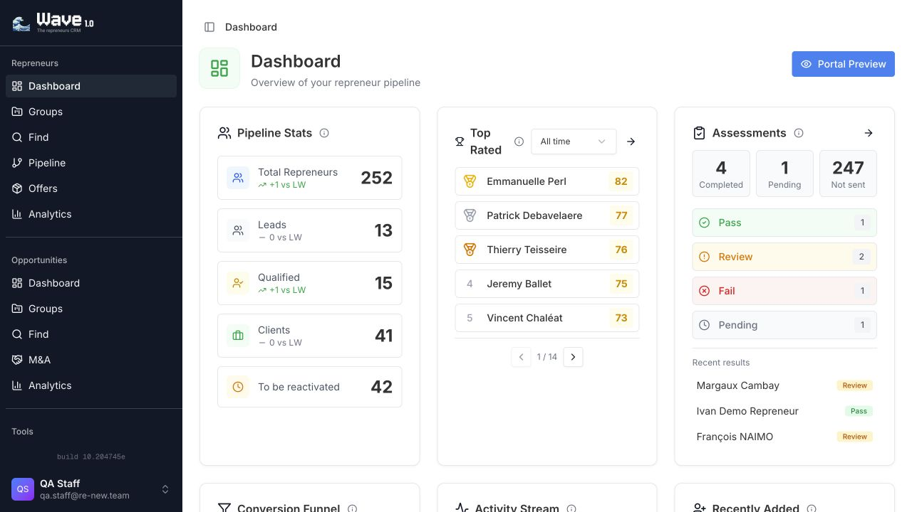
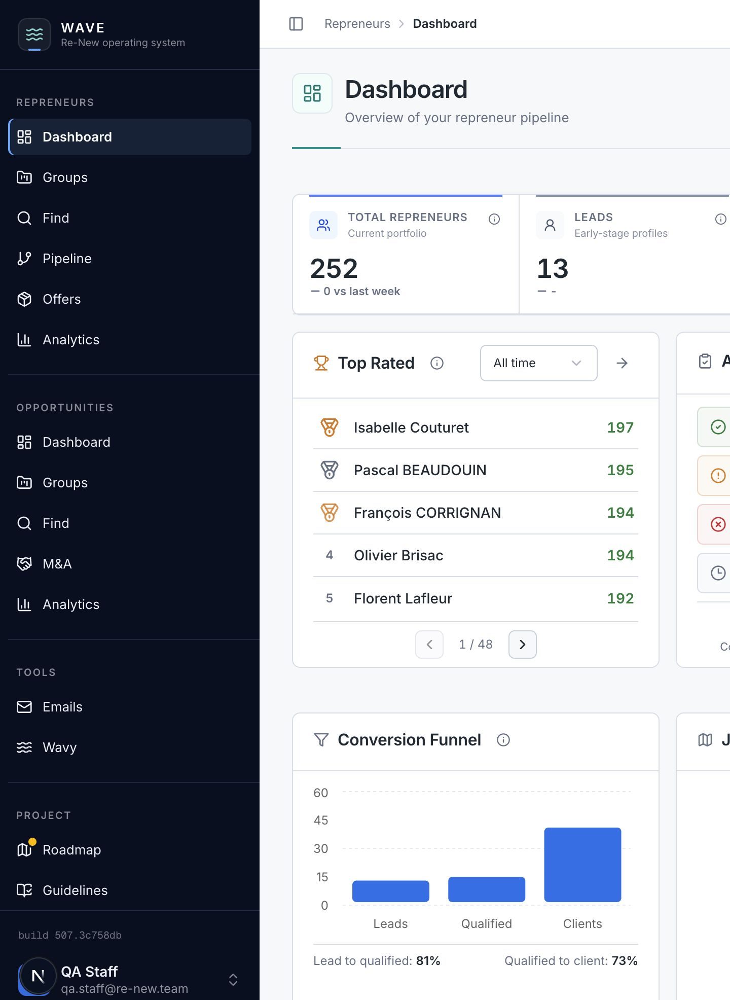

01
From features to decisions
See the state of the business quickly
The dashboard now leads with business state, people requiring attention and the work that should happen next.
Before
Independent cards competed for attention and repeated navigation took up useful space.
Now
Core indicators, ranked profiles, review queues and trends follow a clear reading order.
Why it matters
Less interpretation before the team can decide where to focus.

